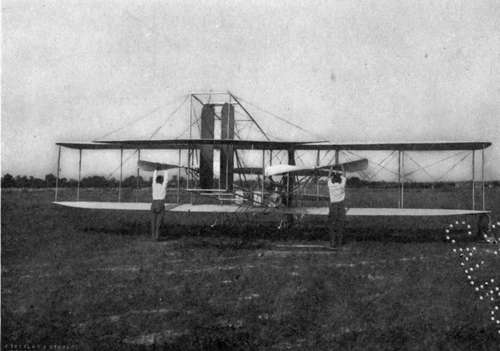

The New Science Of The Air. Part 2
Description
This section is from the book "The New Art Of Flying", by Waldemar Kaempffert. Also available from Amazon: The New Art of Flying.
The New Science Of The Air. Part 2
The scientific projection of the human mind to the upper atmosphere was not achieved merely by the invention of instruments and means for elevating them. Our eyes could not read the instruments when they were suspended in the air, and so it became necessary to make the artificial senses self-recording. Ingenious scientific artisans have provided the barometer, thermometer, hygrometer, and wing-gauge with clock-driven fingers that write a continuous, colourlessly impersonal, and therefore unbiassed story of atmospheric happenings at great heights, — a story which, to those who are versed in the hieroglyphic script in which it is written, gives a coherent account of the conditions that prevail at various elevations. The unselfish inventive genius which has been displayed in devising these self-recording instruments would have been richly rewarded had it been applied to the needs of every-day life.
The lifting power of kites and balloons is limited, for which reason the instruments are made of feathery lightness and are ingeniously combined. The combination is generically known as a " meteorograph." Thus the thermometer and barometer are merged into a meteorograph specifically known as a " baro-thermograph," a contrivance which is provided with two automatic hands, one of which writes down the weight (pressure) of the air and the other its temperature. Sometimes the barometer, thermometer, and hygrometer are joined in a single instrument, which notes the humidity as well as the pressure and temperature. When the instruments return to the ground, their records inform the meteorologist of the height of the kite or balloon at any given minute during its ascent and of the temperature and barometric pressure at that particular minute. Because no ink has been found which will not freeze in the bitter cold of the upper air, the writing fingers of these instruments trace their story on smoked cylinders. At lower levels special inks and paper can be employed. Samples of air have been collected by Teisserenc de Bort at heights which no human being can ever hope to reach, by devices that operate as if they were endowed with brains. To explain this remarkable feat, it may be stated that at a predetermined altitude the barometer was made to complete an electric circuit (just as we push a bell-button), whereupon a little hammer fell and broke a closed, exhausted glass tube. Air rushed into the tube, and the glass was thereupon automatically sealed by a current which heated a platinum wire coiled around the broken end of the tube, thereby fusing the glass.
Fig. 44. The Wright machine is driven by two propellers driven in opposite directions by chains connecting the propeller shafts with the motor shaft.
Photograph by Tresslar.
These are but a few of a long list of scientific inventions which might be cited and of which the world hears nothing. Meteorology has more than one unheralded Edison and Tesla, men who labour year after year in scientific obscurity, and who deem themselves richly rewarded if their instruments aid in the discovery of some new atmospheric phenomenon which may illumine the very dark subject of meteorology.
The elevation of these instruments by kites has probably been carried to the greatest perfection by Prof. A. Lawrence Rotch, of the Blue Hill Meteorological Observatory at Hyde Park, Massachusetts. His exploration of the lower four miles of air is the most complete that has yet been made. The kites employed by him, and, for that matter, by most air explorers, are of the open box type, which every boy now flies in preference to the old-fashioned single-surface contrivance distinguished by its long tail of rags knotted together. For meteorological purposes, however, the box kite assumes dimensions that utterly dwarf its toy prototype. Some of the Blue Hill kites measure nine feet in length. Despite the great lifting capacity imparted by its expansive surface, an air-exploring kite could not attain a considerable height if it were held only by hemp. A cord or rope would necessarily be so heavy and thick that a kite would be severely taxed in pulling it up. Hence it is the practice to employ fine piano-wire, which is both strong and light.
So powerful is the pull of a large kite that human muscles are hardly able to cope with it. An engine-driven winch is therefore utilised to haul in the long line. Devices are employed to register the pull of the kite and the length of the wire in use. Often it happens that as much as ten miles of line may be paid out. The elevation of the kite is determined in clear weather from data obtained by means of special optical instruments (theodolites) placed on the ground. At night and in hazy weather the meteorograph readings themselves must be depended upon.
Four miles may be considered the maximum height that a kite is capable of attaining. To explore the air above that limit and above the six miles that mark the end of human endurance in manned balloons, the " sounding-balloon" is employed, of which the most skilful use has been made by Teisserenc de Bort and by Dr. Richard Assmann.
The balloons are filled with hydrogen gas, which expands with increasing elevation. The degree of inflation therefore depends upon the height to be attained. Thus, if the balloon is to reach a point where the air is one half as dense as it is at the level of the sea, the gasbag is half filled. If at the objective point the density of the air is one fourth the density at the level of the sea, the bag is filled only one fourth. Obviously, if very great heights are to be attained, heights where the air is exceedingly rare and thin, the balloon's capacity must be great and the construction wonderfully light. Paper balloons were, therefore, adopted by Teisserenc de Bort. Latterly, however, Ass-mann's India-rubber balloons, varying in diameter from three to five feet, have come into use, because they reach greater heights. At the maximum elevation of the balloon the expansion of the hydrogen gas is so powerful that the balloon bursts. Retarded in their fall by a parachute, the instruments glide gently down to the ground. Instead of a parachute a slightly inflated auxiliary balloon may be employed which does not explode, and which has sufficient buoyancy to prevent a too rapid descent of the instruments and to indicate the position of the basket in a thicket or at sea. To the basket in which the instruments are contained a printed notice is attached which offers a reward for their return. More than ninety-five per cent of the sounding-balloons liberated find their way back to the observatories. Indeed, the zeal of the finder is sometimes such that he even takes the trouble to polish the smoked cylinder on which the records are traced.
Continue to:
- prev: Chapter IX. The New Science Of The Air
- Table of Contents
- next: The New Science Of The Air. Part 3